믿고 맡길 수 있는 치과를 찾고 계시다면,
365베스트치과 부평청천본점의 차별화된 혜택을 지금 만나보세요.
일요일 및 공휴일까지 진료하는 365베스트치과
365베스트치과 부평청천본점 제휴사 전용 비급여 진료 할인 안내
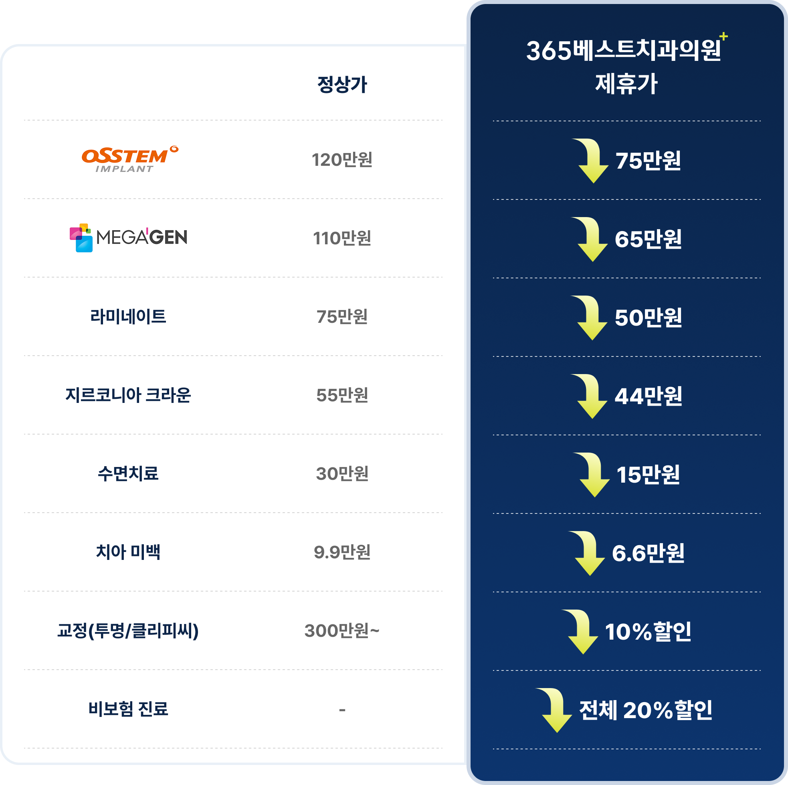
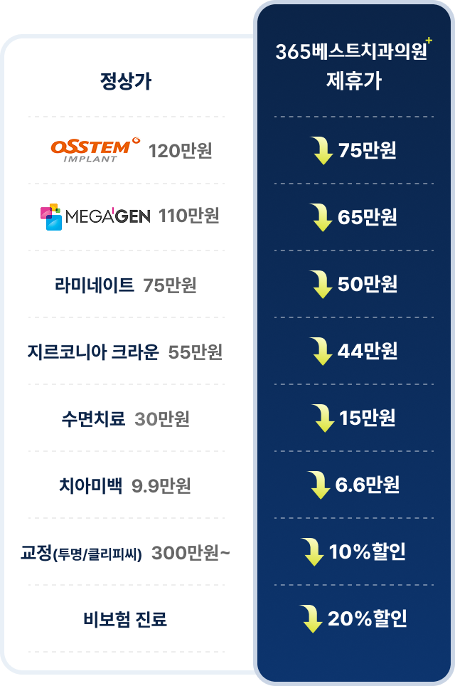
치아상실로 인한 불편함, 금액으로 인한 부담감
365베스트치과에서 덜어드리겠습니다!
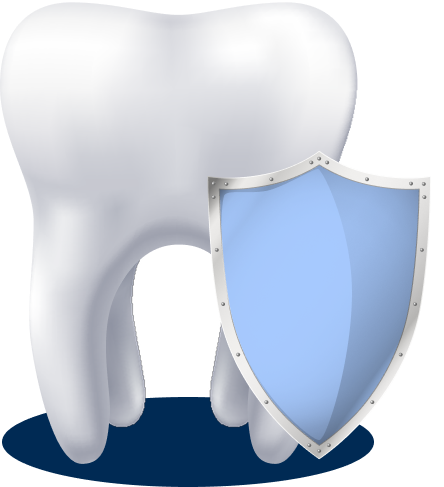
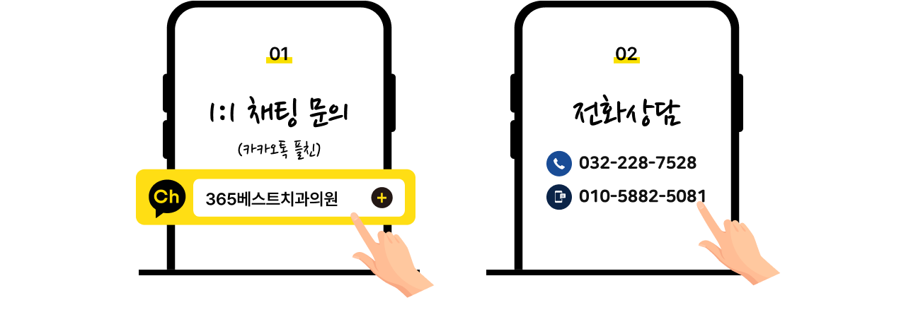
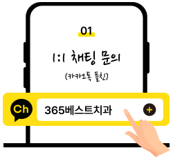
편하신 방법으로 연락주세요!
퇴근 후 천천히 오세요!
※ 예약시 제휴사명을 말씀해주세요!
365베스트치과는 통증 감소를 위해 노력합니다!
365베스트치과 의료진은 대부분의 환자들이 쉽게 느끼는 치과공포증을 위해 수면의식하진정요법과 최소 절개 임플란트를 진행하고 있습니다.
치과 공포증으로 치료를 고민하셨다면 이제 그만!
치과 공포증으로 고민이셨다면 이제 그만!
치과진료의 공포심과 긴장감을 낮추기 위해 혈압, 맥박
산소포화도 등을 체크한 후 의식하진정요법을 통한
수면마취 후 치료가 진행되기에 치료 중 느낄 수 있는
통증이나 불쾌감을 최소화 할 수 있습니다.
부작용이 적은
미다졸람만을 이용합니다.
Full-Monitoring
System으로
수술 중 환자의
상태를 감지하고 체크하여
진행합니다.
마취과 전문의 자문하에
제새동기
혈당 측정기 등을 항시
구비하여 모든 응급 상황에
철저하게 대비하고 있습니다.
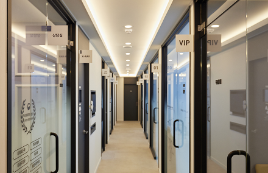
건강한 삶을 추구하는 365베스트치과는
참 바른 치과입니다
언제나 최선을 다하는
365베스트치과의원이 되겠습니다.
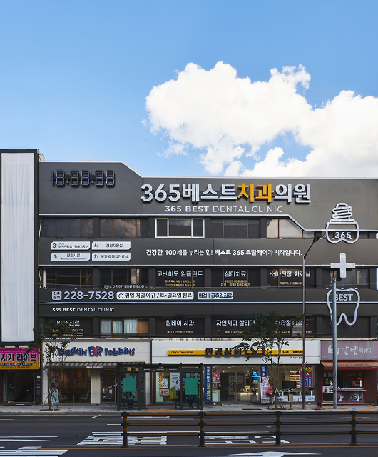
안심하고 오랜기간 진료 받을 수 있도록 장기간 치료에도 변함없이 같은 자리에서 안전하고 진심을 다하는 진료를 할 수 있도록
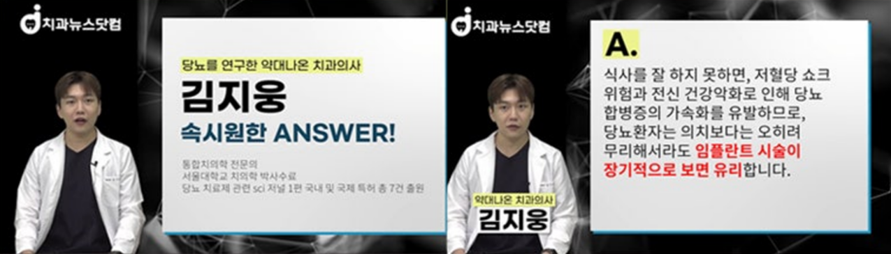
감동을 주는 책임진료, 정성을 다해 내 가족처럼 진료합니다.
임플란트,라미네이트,교정 Before/After
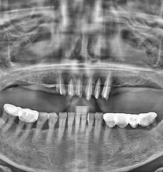
치료 전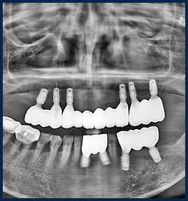
치료 후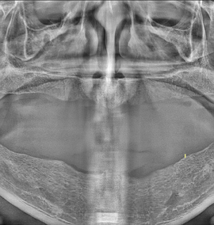
치료 전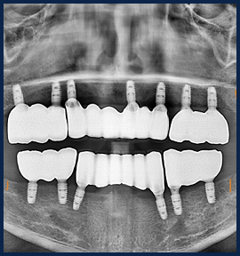
치료 후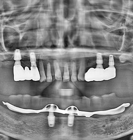
치료 전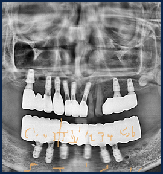
치료 후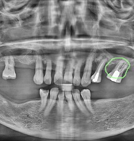
치료 전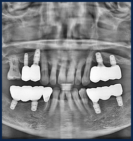
치료 후11인 분과별 전문의 협진 시스템 운영
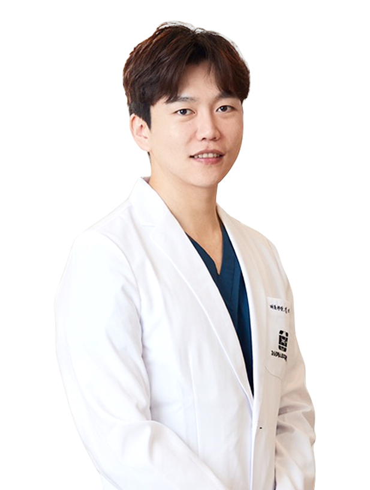
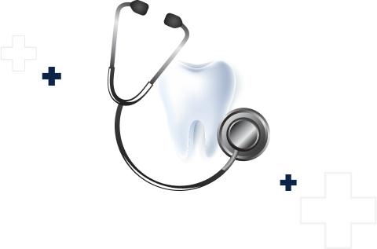
365베스트치과 부평청천본점은 다릅니다.
연중무휴 진료부터 정밀 치료까지,
모든 것을 갖춘 병원
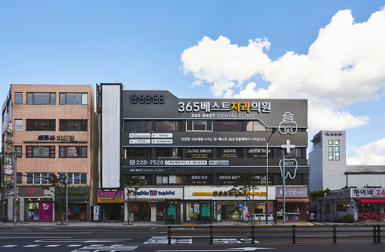
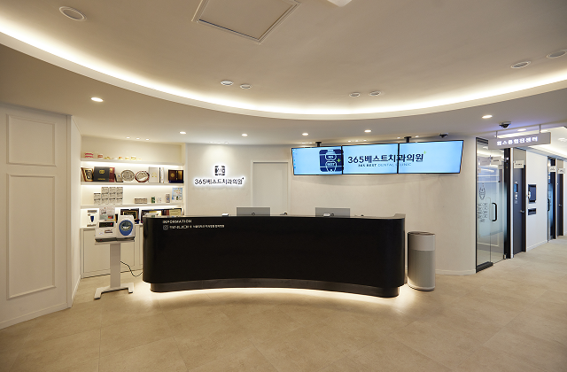
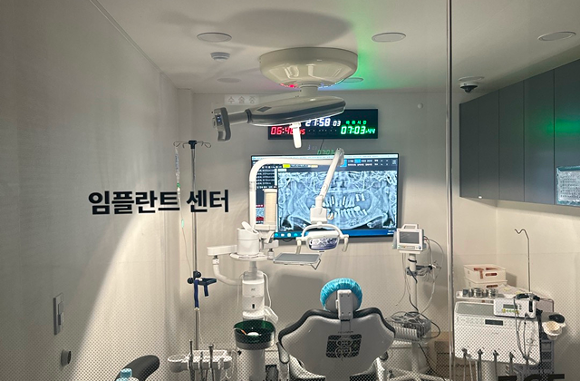
리뷰가 증명하는
365베스트치과 부평청천본점
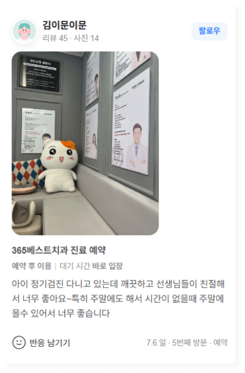
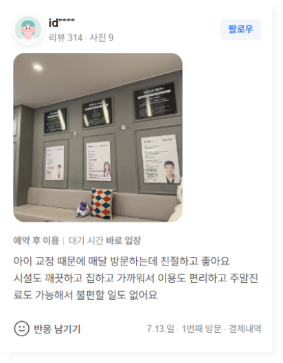
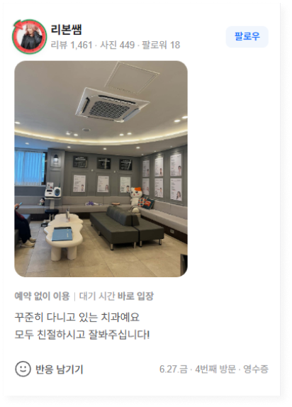
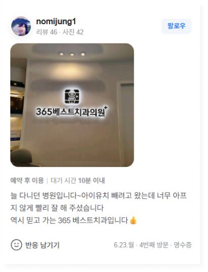
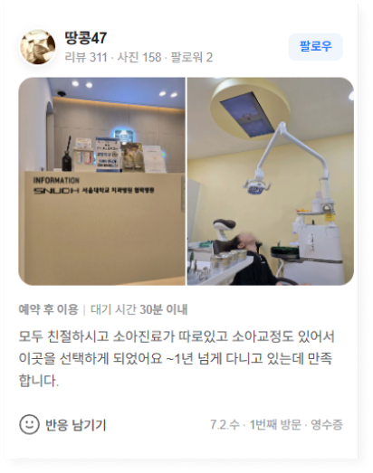
깔끔한 시설에서 최상의 서비스를 제공합니다
치아교정중 치아표면의 탈회, 잇몸의 염증/퇴축, 치근흡수 등의 문제점이 발생할 수 있으며 임플란트 시술 시 교합이상, 고정체탈락, 신경손상, 염증 등의 문제점이 발생할 수 있습니다. 의료진과 충분한 상의를 하시길 바랍니다.
365는 환자를 생각합니다.
치료의 시작부터 치료 이후의 경과까지
환자분께 편안한 경험이 될 수 있는
수준 높은
진료를 위해 언제나 정성을 다하겠습니다.